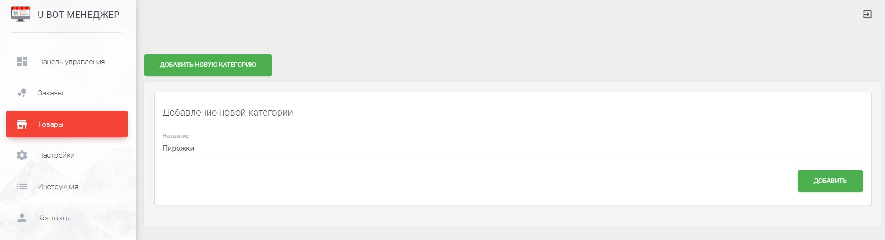

<div class="main-content">
    <div class="container-fluid">
        <h2>Инструкция</h2>
        <p>В данном разделе предоставленная информация по использованию данного продукта. Очень важно ознакомится с ней, дабы правильно пользоваться системой. </p>
        <div class="row">
            <h3 class="cursor-pointer" data-toggle="collapse" data-target="#" data-target="#1">1. Наполнение каталога</h3>
            <div id="1" class="collapse">
                <h4 class="cursor-pointer" data-toggle="collapse" data-target="#" data-target="#1_1">1.1 Создание категорий и подкатегорий.</h4>
                <div id="1_1" class="collapse">
                    <p>В нашей системе добовление товаров в катало происходит из специального раздела,
                        <a target="_blank" href="https://ubot-beta.herokuapp.com/items">https://ubot-beta.herokuapp.com/items</a>. Для начала добавления товаров, нужно создать категорию товаров. Кажадя категория
                        может содержать подкатегории. И уже в подкатегории, вы можете добавлять товары.

                    </p>
                    
                    <p>Добавление подкатегории.</p>
                    
                    <p>Открывать категории для просмотра и редактирования можно по клику на строку с названием категории или подкатегории. Любую
                    категорию или подкатегорию Вы можете удалить, вместе с ней будут удалены все товары которые содержаться в ней. Важно, если
                    ранее клиенты сделали заказ товаров, а потом этот товар или его категория были удалены, на таблице с заказами в заказе также
                    товар будет удален.
                    </p>
                </div>
                <h4 class="cursor-pointer" data-toggle="collapse" data-target="#" data-target="#1_2">1.2 Добавление товаров.</h4>
                <div id="1_2" class="collapse">
                    <p>Добавление товаров происходит в специальном отделе в подкатегории, для добавления товары Вы должны выбрать его изображение, название и описание. Все поля являются обязательными.
                        
                        Товар можно удалить, нажав на красную кнопку удаления или отредактирвать (фиолетовая кнопка).
                        
                        Для того, что бы клиенты могли заказть товар в чат-боте, товару нужно добавить размеры и цены. Для каждого размера - своя цена.
                        Это происходит по нажатию на зеленую кнопку.
                        
                        Перед вами появится таблица размеров. В первую очередь, для добавления нового размера, нажмите на иконку с +. Откроются поля для заполнения(не перепутайте с полями, которые уже открыты, это поля для фильтрации).
                        Вы должны заполнить название, вес и его измерение (млл, кг, г и тд), а также указать цену. Цена может быть дробной, нужно указывать в таком случае через точку, варинат 12,2 не верен, нужно 12.2 .
                        После того как Вы заполните нужные поля, наимаем на кнопку с дискетой и сохраняем размер.
                        В будущем его можно будет удалить или редактировать.
                    </p>
                </div>


            </div>

            <h3 class="cursor-pointer" data-toggle="collapse" data-target="#" data-target="#2">2. Обработка заказов</h3>
            <div id="2" class="collapse"></div>

        </div>
    </div>
</div>
